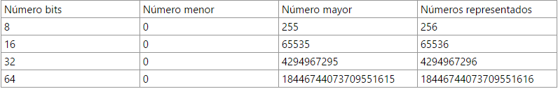

Numeros naturales
Los numeros naturales se crearon a raiz de una necesidad. El ser humano necesitaba de un sistema para contabilizar objetos. Los numeros naturalesson el conjunto de numeros los cuales nos sirve para identificar una cantidad de elemntos. Por ejemplo, tengo 5 vacas, el numero cinco es un numero natural, puesto que nos permmite dar una cantidad de vacas.
Como expresarlos en informática
Si el número que queremos representar es el resultado de contar objetos, la solución es bien fácil: representamos el número en binario y ya está. Por ejemplo: 1098 en binario se representaría como 10001001010. Según el número de bits que empleemos podremos representar más o menos números. En la siguiente tabla vemos el número menor y mayor que podemos representar según la cantidad de bits que empleemos.
